Let us tell you about our collaboration with Tanzanian ecologists to conserve the population of the Critically Endangered Long-billed Tailorbird, also known as the Long-billed Forest Warbler (Artisornis moreaui). According to some estimates, fewer than 250 individuals remain, residing in the biodiversity-rich Amani Forest in the Eastern Usambara Mountains.
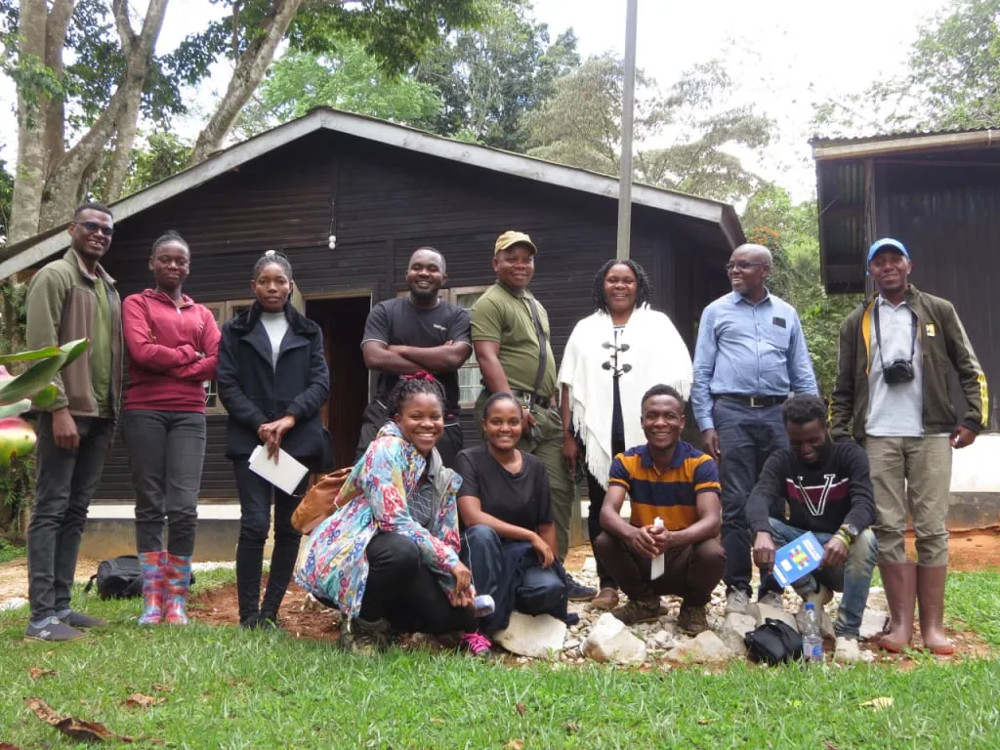
Birds are disappearing
Bird populations are declining worldwide. According to the International Union for Conservation of Nature (IUCN), nearly half of all known bird species (49%) are under pressure from human activities, leading to population declines. This alarming trend affects not only rare species but also some of the most common birds. Their status remains unchanged only due to their wide distribution, numerous habitats, and still large populations.
More than are under threat, classified as Critically Endangered, Endangered, or Vulnerable. Over 1,000 additional species are Near Threatened, indicating serious impending problems for these birds. Many species have already vanished permanently, even from zoos. Since 1500, at least 187 bird species have gone extinct, largely due to human impact on ecosystems, including the introduction of mammals that have decimated bird populations in new habitats.

Here are a couple of recent examples. In 2011, the Alagoas Foliage-Gleaner (Philydor novaesi), endemic to Brazil, became extinct. In 2019, another Brazilian endemic, the Cryptic Treehunter (Cichlocolaptes mazarbarnetti), was declared extinct. These extinctions occurred right before our eyes. Previously, bird extinctions primarily occurred on islands, but now mainland birds are also at risk. The graphs drawn by ornithologists are alarming and show a constantly accelerating decline in bird populations.
All of this can be attributed to the ongoing sixth of animals and plants on Earth, caused by . The natural rate of species extinction is 1–5 species per year (for all living species). Currently, according to scientists, species are disappearing at a rate that is much higher and nearly impossible to calculate. Estimates are complex, but they suggest that , including plants and microorganisms, could go extinct annually.
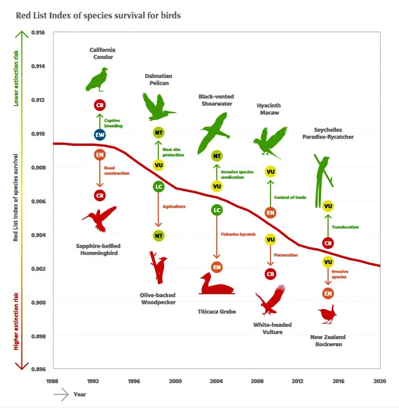
The graph above requires some explanation. The Red List Index shows the level of extinction risk for species. The red line on the graph is declining, indicating an increase in the risk of bird extinction. The green part of the index represents the number of species whose conservation status has improved, totaling 93 species since 1988. The red part indicates species with deteriorating status, amounting to 436 species. Thus, the average bird extinction rate is 2.17*10-4 species per year, which means the extinction rate for birds is now six times higher than it was in the year 1500.
The true causes of this monstrous acceleration are the loss and degradation of bird habitats, driven by the spread of agriculture and large-scale logging. For example, in the Usambara Mountains near the Indian Ocean in East Africa lies the famous Amani Forest, considered a biodiversity hotspot due to its large number of unique plant and animal species. It is part of vast ancient forests that, millions of years ago, were connected with the rainforests of South America when the current two continents were part of one large landmass. Unfortunately, due to active logging and human settlement, the Usambara Mountains have lost about 70% of their original forest cover.
All this affects specific birds inhabiting Amani. A striking example is the Long-billed Tailorbird (Artisornis moreaui). This species is classified as Critically Endangered. According to the best estimates of ornithologists, only 250 remain, but there may be even fewer. Getting an exact number is difficult because the bird is elusive and hard to spot, and the density of its population in its habitat is quite low.
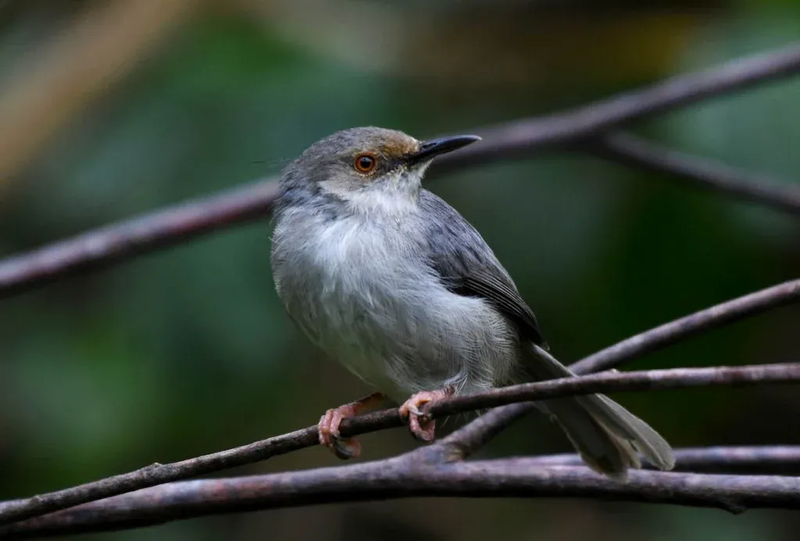
In recent years, a project has been operating in the Amani Forest aimed at studying and constantly monitoring this key ornithological area. Birds living in and around Amani are counted, statistics are collected, and problems preventing birds from breeding and increasing their numbers or at least maintaining their population are identified. Initiatives and specific solutions are proposed to help local populations, including the Long-billed Tailorbird. This work is carried out by the non-governmental ornithological organization Nature Tanzania.
Nature Tanzania
Nature Tanzania is a conservation organization dedicated to studying Tanzania's birds and their habitats. The organization not only counts birds to monitor important ornithological areas but also actively protects them from various threats and helps their populations grow or at least slow their decline.
This NGO operates on donations from its members, managed by an independent board of directors. Government and regional officials approve its initiatives but do not influence its policies. Nature Tanzania collaborates with students from natural resource management colleges and related universities, as well as volunteers, local communities, and small businesses, engaging them in biodiversity conservation efforts in Tanzania.
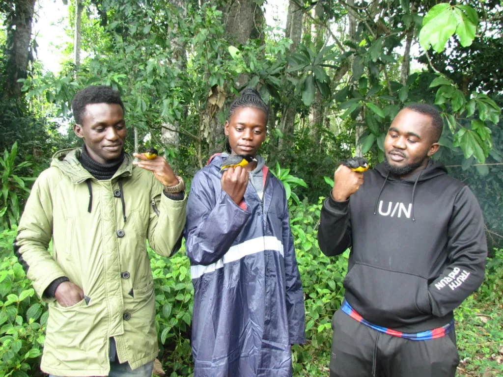
This approach is effective—ultimately, the people living near these ecosystems have the most at stake in their preservation. Here’s how it works in practice.
Nature Tanzania's main goal is to identify and eliminate the causes of biodiversity decline. They undertake strategic projects such as training courses for staff, extensive studies of important ornithological areas, disseminating knowledge beyond the organization, and sustainable development projects for local communities. They also run specific programs like crane population conservation projects in certain regions, the Lake Natron conservation project, school environmental education near Amani and Nilo forest reserves, and farmer collaboration in Amani to protect the endemic Long-Billed Tailorbird population.
Nature Tanzania's environmental projects
Lake Natron’s flamingos
Lake Natron in northern Tanzania is not only a popular tourist destination but also the primary breeding ground for Lesser Flamingos. About 80% of the world's Lesser Flamingos nest and raise their chicks here. We recommend watching the beautiful documentary "The Crimson Wing," filmed at Lake Natron, showcasing the life of young flamingos.
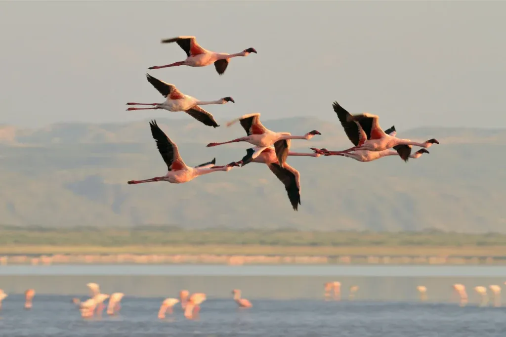
However, this salt-rich lake could become a source of valuable resources for industrial extraction. There are plans to build a large potash extraction plant at the lake, which could threaten the Lesser Flamingos' habitat. Nature Tanzania, along with other conservation organizations, has successfully halted industrial development, proposing alternative livelihoods for local residents that involve ecological activities.
Grey Crowned Cranes
You may have seen images of Grey Crowned Cranes—beautiful birds that can be encountered on safari in Tanzania. However, the status of this species worries environmentalists—these cranes are becoming extinct due to the draining of wetlands, the development of agriculture, and the widespread use of pesticides.
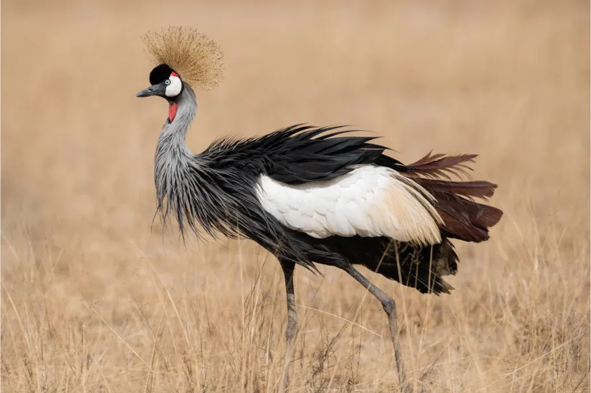
Nature Tanzania has organized a project to preserve the crane population on the Kagera River. Environmentalists, working on such complex tasks, rely on the help of local residents, as this helps establish the project's effectiveness in the long term. People living near the habitats of Crowned Cranes are educated about ecology and its problems, about birds and the importance of their conservation, what harms them, and what can help. Farmer and children's clubs are created, where educational lectures are held. The strategy of involving children proves itself—children are more receptive to new information, and when they return home from schools and clubs, they eagerly share new knowledge with parents and other family members.
Sustainable development for the Maasai
In areas where Maasai herders live, Nature Tanzania devises ways for the sustainable development of the local community so that nomadic shepherds with their herds cause less damage to the ecosystem. They try to find alternative sources of income for them and encourage the use of efficient energy sources. Alongside this, Maasai representatives are lectured on the rights of women, young people, and men to improve the quality of life in communities strongly committed to old traditions. All this, in the long run, should change the economic habits of the Maasai, who are used to living without regard to ecological problems.
In the previously mentioned Amani Forest in the Usambara Mountains, a project is being implemented for field training of volunteers and graduates of specialized universities. Amani is famous for one of the largest botanical gardens in Africa, a high level of endemism among plants and animals, and as an interesting birdwatching hotspot. Since the time of German colonial influence, a biological and agricultural institute has been operating here. All these are points of attraction for university graduates from all over Tanzania. It is on them that the mentoring program in the field of biodiversity conservation is focused.
These and other projects are carried out in partnership with other conservation organizations, such as the century-old international bird protection organization BirdLife International, Germany's oldest and largest environmental association NABU, the leading international association for the study and conservation of African birds African Bird Club, and others.
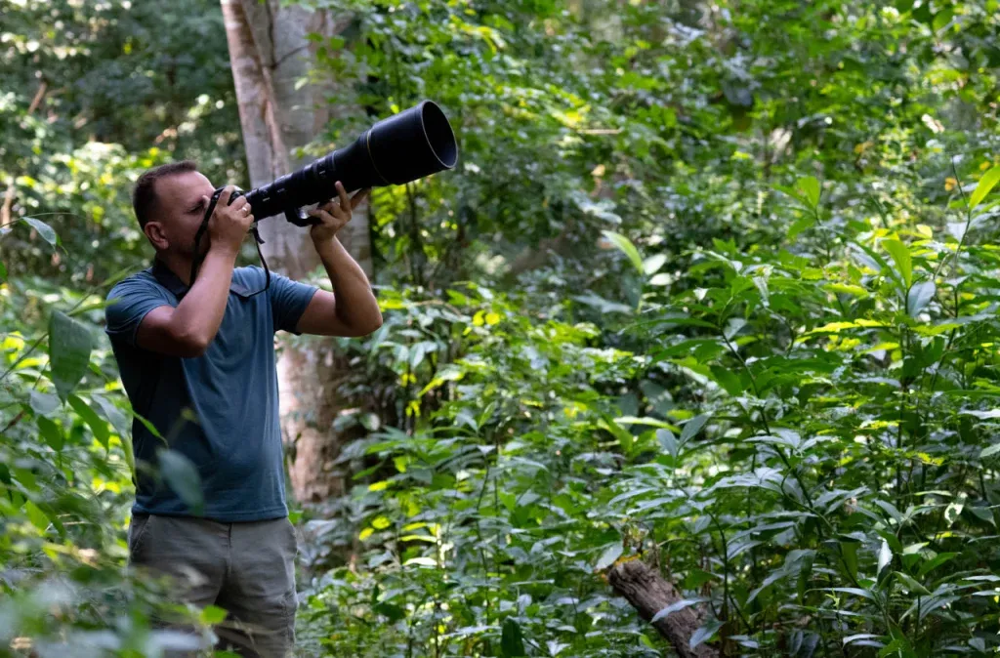
In addition, Nature Tanzania is implementing a project in Amani to preserve the Long-billed Tailorbird population.
Long-billed Tailorbird — a Tanzanian endemic
The Long-billed Tailorbird is a small songbird from the order Passeriformes. It looks inconspicuous, as is typical for members of this order, with its plumage in gray and light brown colors. It can be described as unremarkable. However, it is quite charming, with a long beak and a long tail, which is either held back or raised when alarmed.
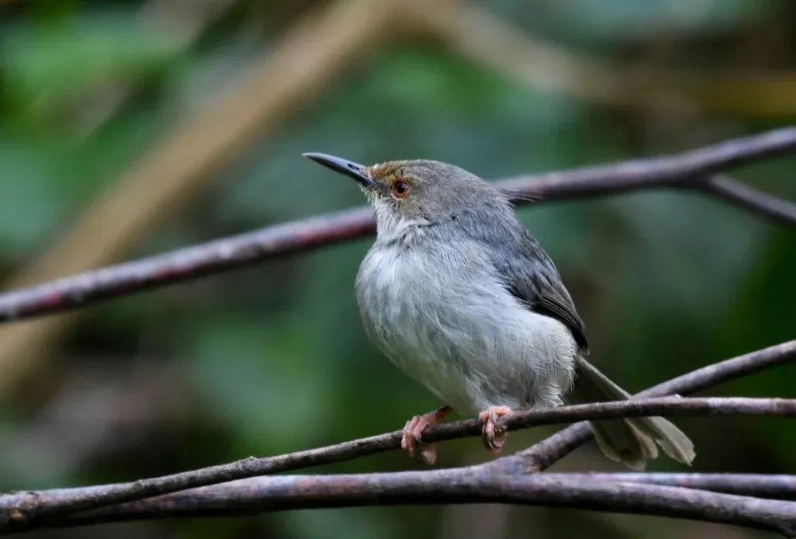
It lives in shrub thickets, close to the ground. This is one of the reasons why it is difficult to detect. In the tangled thickets, tailorbirds search for food—small invertebrates and insects. Their main habitats are forest edges and small forest canopies in gaps between dense patches of trees. They do not venture far from the forest, even though there are many places that seem suitable for them, such as clearings with shrubs outside the forest. This is a problem for preserving their population. As natural forests are destroyed, tailorbirds lose their accustomed habitat.
It seems they are particularly dependent on climbing plants and vines, as they are most often found in such forest environments near drainage channels and open clearings. They are also frequently spotted on the forest edge near tea plantations, which are abundant in and around the Amani Forest.
Agriculture and the artificial planting of trees not typical for this zone lead to the destruction of the Long-billed Tailorbirds' habitat. Other threats include the collection of firewood in the forest and mineral extraction in this area. Trees are cut down for power line construction, and plants are gathered for medicinal purposes, altering the ecosystem. In place of the cut trees, species that did not originally grow here are planted, which creates too much foliage, unsuitable for the light-loving tailorbirds.
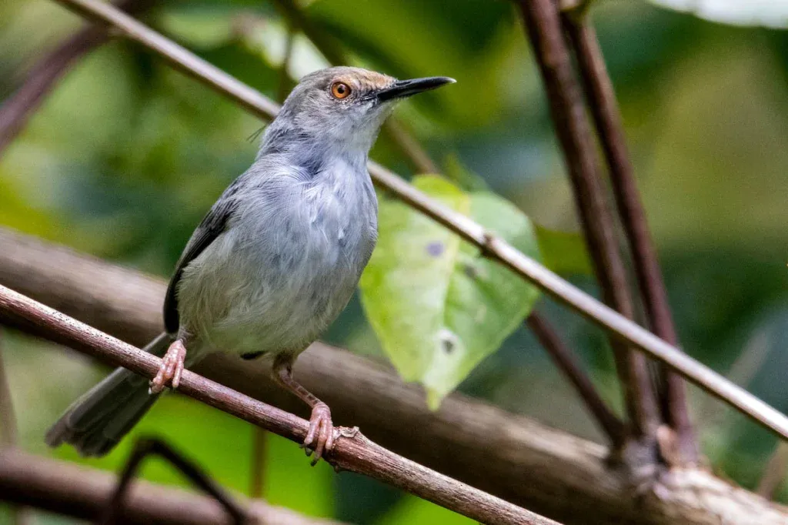
All this concerns the Amani Forest in the East Usambara Mountains, where the subspecies Artisornis moreaui moreaui lives, which is the focus of this story. It has also been recorded in another forest reserve—Nilo on the mountain of the same name, but the population size of this separate group is unknown. Amani is considered the primary habitat. The most accurate recent estimates were obtained in 2000, indicating that the Amani population numbered between 150-200 individuals. Today, the International Union for Conservation of Nature and Natural Resources estimates the known population of Long-billed Tailorbirds in Tanzania at 50-249 adults. These are approximate figures.
There is another subspecies of the Long-billed Tailorbird—Artisornis moreaui sousae, which inhabits northern Mozambique on the highland forest plateau of Njesi, as well as two other nearby mountains. Representatives of this subspecies are smaller, slightly darker in feather color, and have a dark brown spot on their heads. Some taxonomists classify this bird as a separate species, the Mozambique Forest Warbler. Its conservation status is different—Endangered, which is one step higher than the Critically Endangered status of the Tanzanian Tailorbirds. However, they inhabit inaccessible areas where no people live, so there are fewer threats to them. Moreover, their status may be revised if ornithologists count more individuals in the forests of Mozambique over time.
As you can see, both birds bear the name Moreau in their scientific name. This man was a modest British accountant who, out of love for nature and birds, became an amateur ornithologist and later a scientist. He lived in Africa for many years and left a noticeable mark in the history of ornithology.
Moreau, whose legacy lives on in the name Artisornis moreaui
Reginald Ernest Moreau, a Briton with French roots, was born and raised in a family far removed from the natural sciences. However, from childhood, he was fascinated by walks around his native London suburb and observing birds. He was greatly influenced by the books of the first wildlife photographers, Richard Kearton and Cherry Kearton, who not only studied nature but also enthusiastically wrote about it in books illustrated with their photographs.
Interestingly, Moreau's main job was a rather dull clerical activity in the military department. Birdwatching remained a hobby. But soon, due to health problems, the family doctor advised Mr. Moreau to completely change his environment, and he requested a transfer to Cairo, soon moving to Africa, to Egypt. This happened in 1920.
In Egypt, Moreau continued his routine clerical work, taking walks and excursions in his spare time. Besides observations, he made many notes on bird behavior. His health gradually improved, and he managed to make acquaintances in Cairo, first with the ornithologist and director of the Giza Zoo Michael John Nicoll, who became famous for his fundamental guide on Egyptian birds, and then with the entomologist Carrington Bonsor Williams, who introduced him to scientific theories and encouraged him to publish his notes, as they were significant for ornithology.
Reginald Moreau sent his records to the leading bird journal "Ibis," published by the British Ornithologists' Union, the second oldest ornithological organization in the world after the German Ornithologists' Society. Several years later, he was invited to work in the editorial office of this scientific journal.
One day, Moreau was walking, observing birds, and saw a woman gathering flowers surrounded by birds. They liked each other and began dating. Soon the woman became his wife, and the couple, now studying birds together, had a daughter named Prinia after the Graceful Prinia (Prinia gracilis).
In 1928, the Moreau family moved to East Africa, to Amani, at the invitation of Carrington Williams, where a research station founded by the Germans was operating, as this territory was controlled by Germany before World War I. The station studied local plants, butterflies, and birds.
Moreau enthusiastically engaged in observing East African birds, describing their behavior and nests. Now he not only sent his notes to scientific journals and newspapers but also worked as an editor for the East African Agricultural Journal. Later, the results of his observations would lead ornithologists to new important ideas in evolutionary biology. Moreau's name would remain in the history of ornithology, and he would receive an honorary Master of Arts degree from Oxford University, be invited to work at other institutes and be awarded an honorary prize by the British Ornithologists' Union.
Living in Amani, Moreau collected the first specimens of new bird species, including the Long-billed Tailorbird. It was described in Britain and named after Moreau—Artisornis moreaui. Another bird discovered in Amani, Scepomycter winifredae, was named by Reginald Moreau after his wife Winifred—Mrs. Moreau's warbler, also known as Winifred's Warbler. He also named another bird after her—the South Pare White-eye (Zosterops winifredae). All three birds are endemic to present-day Tanzania.
How Nature Tanzania works to save the Long-billed Tailorbird
The main principle of Nature Tanzania when implementing any conservation projects is to involve local communities in helping wildlife. Without this, the effectiveness of any actions decreases or completely disappears over time. If people living near bird habitats significantly influence their lives, creating the threat of population reduction or complete extinction, then these people must somehow change their behavior to stop harming the birds. Most likely, after this, their population will recover on its own.
In the Amani Forest, local farmers who own plots on the forest boundary are involved in the work, where the Long-billed Tailorbirds live. On these plots, farmers cut down local tree species, planting non-native species for subsequent logging, as well as plantation crops like cardamom. All this destroys the natural ecosystem of the Usambara Mountains' forests.
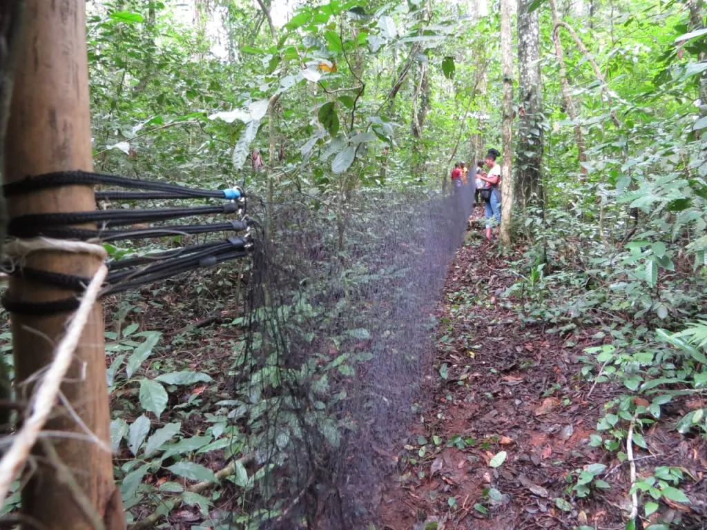
The main problem for the Amani Forest, as well as other forests in the Usambara Mountains, has been the mass planting of umbrella trees (Maesopsis eminii). It was introduced and cultivated here from 1930 to 1970, becoming an invasive harmful species during this period and beginning to dominate the mountain slopes. The primary solution for preserving the local ecosystem is to remove this tree species. The problem is that it grows very quickly, and residents commonly use its trunk in construction and its crown as animal feed. Additionally, this tree species is commonly planted on coffee and cardamom plantations because, being umbrella-shaped, it provides the necessary shade for the cultivated crops.
Nature Tanzania specialists have persuaded the local community leaders and farmers to leave part of their plantations and engage in other profitable activities instead—growing black pepper and livestock farming. Black pepper, being a woody vine, unlike herbaceous cardamom, grows well in the existing forest, clinging to and winding around the trunks of neighboring trees. There is no need to clear the forest for its cultivation, as is done for planting cardamom bushes.
As an alternative to plantations, farmers received cattle, pigs, and beehives, which will bring them income lost after abandoning some old plantations. Nature Tanzania goes further, not leaving the farmers with whom these agreements were made but helping them with new forms of small business. For example, to make the ready black pepper sell better, organization staff helped farmers develop modern and higher-quality product packaging from a marketing perspective. When the provided animals started having problems and falling ill, Nature Tanzania appointed a veterinarian to treat the animals.
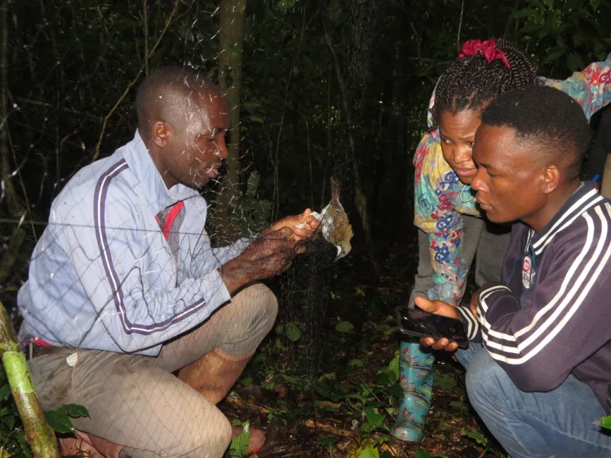
Lectures on spice cultivation were held in local households to ensure success from the start. Not only men but also women are actively involved in the project, contributing to addressing the issue of gender inequality, which is relevant for rural communities in Tanzania and hinders economic development.
People understand why they are changing their agricultural practices—within the educational part of the project, Nature Tanzania staff explain the situation of the unique bird species in Tanzania threatened with extinction. Local residents are informed about the importance of maintaining ecological balance, the problems of the Amani Forest, and the animals living there. They are shown the umbrella trees and explained the harm they cause to the Usambara Mountains' forests. Together with the residents, ecologists can control the number of these tree species.
All this is part of a comprehensive set of actions aimed at sustainable forest edge management in the East Usambara Mountains to preserve the Long-billed Tailorbird population and the entire endemic biodiversity of this zone.
Angelino Adventures joins Nature Tanzania's work in Amani
One of Nature Tanzania's projects is field training and mentorship as part of the Biodiversity Monitoring program, shortened to BiMO. This program is conducted in the Amani Nature Reserve and is aimed at interested youth, primarily college and university graduates specializing in wildlife-related professions.
This program was funded by membership fees from all those who are part of the organization, which, of course, was not enough. In March 2023, Angelino Adventures joined Nature Tanzania's work, allocating $12,000 for the training of students and graduates of colleges and universities, as well as for monitoring the Long-billed Tailorbird's habitat and counting individual birds living in Amani.
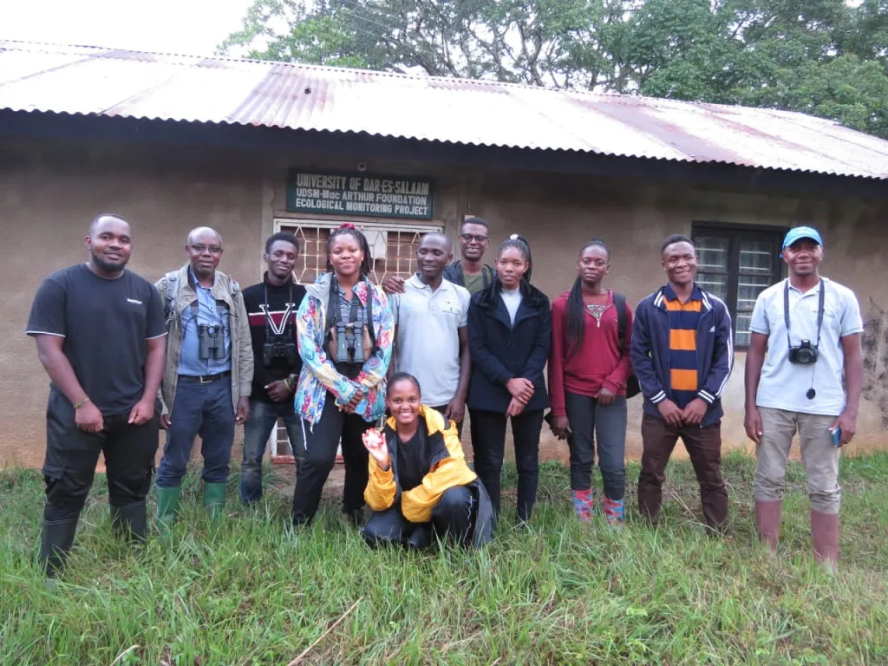
We believe that investments should primarily be made in long-term projects that will bring benefits not only now but also in the future. The mentoring program increases the potential of students and members of the organization itself in the fields of research and monitoring, facilitates the transfer of knowledge and experience, and helps create a sustainable network of a community dedicated to preserving the unique biodiversity of the Usambara Mountains.
Nature Tanzania has also secured support from the Faculty of Zoology and Wildlife Conservation at the University of Dar es Salaam, as well as the University of Dodoma and the Sokoine University of Agriculture. The Tanzania National Parks Authority (TANAPA) and a charitable foundation dedicated to the conservation of the Eastern Rift Mountains, including the Usambara Mountains, are also involved.
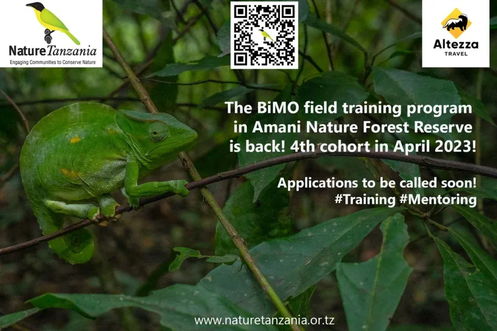
We are pleased to be part of this important project for the nature of Tanzania. After all, nature conservation is one of Angelino Adventures's missions. Besides this project, we invest in many other conservation initiatives, such as the Serengeti De-snaring project to free the Serengeti from poaching traps for animals. We are actively planting trees in the Kilimanjaro region, restoring damaged areas along the rivers.
There are other projects, both one-time and long-term, that we strive to pay attention to. Read about them in our selection of Angelino Adventures's environmental initiatives.
Angelino Adventures’s clients are participating in endangered bird conservation programs
We admit that we have other ideas that can help the birds of Tanzania. More precisely, Nature Tanzania has the ideas, and we trust them as professionals and are ready to help financially and in any other possible ways. At the time of writing this article, preparations are underway for the implementation of two more projects aimed at preserving bird populations in Tanzania, educational projects for local residents, and their active involvement in environmental activities.
We love birds, are passionate about birdwatching, and write about the birds of Tanzania. Learn more about the birds living in the Amani Forest and the Usambara Mountains from our article. If you are interested in traveling to Tanzania to observe local birds, send us a message, and we will be happy to offer you an exciting birding program.
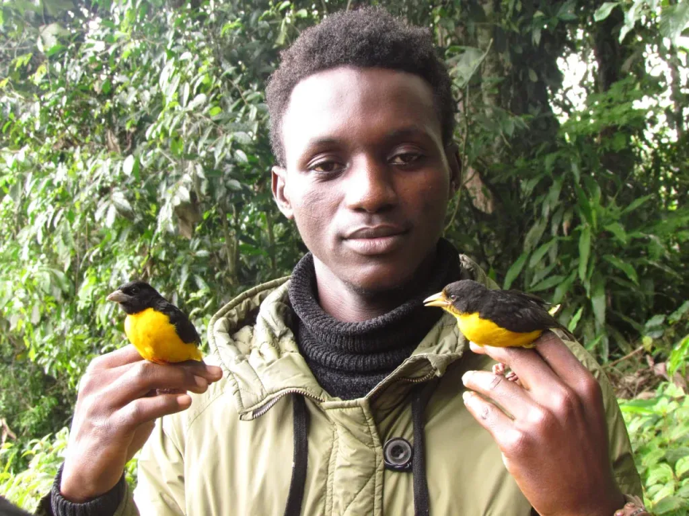
If you are planning a safari to Tanzania's national parks or have already traveled with us, or if you are aiming to reach Africa's highest peak, Mount Kilimanjaro, know that you are contributing to the preservation of East Africa's natural heritage. A portion of the funds you pay for the organization of your trip goes to Nature Tanzania, supporting the endangered birds living in Tanzania.
All content on Angelino Adventures is created with expert insights and thorough research, in line with our Editorial Policy.


Want to know more about Tanzania adventures?
Get in touch with our team! We've explored all the top destinations across Tanzania. Our Kilimanjaro-based adventure consultants are ready to share tips and help you plan your unforgettable journey.
 Tanzania Safaris
Tanzania Safaris
 Kilimanjaro and other mountains
Kilimanjaro and other mountains
 About Tanzania
About Tanzania
 Tanzania Islands
Tanzania Islands